Student Investigations¶
Every investigation below hands you a mystery and asks the evidence to answer it. Each one is a self-contained Hands-On Lab a teacher can assign to one student or a small group.
Lab types: 🧪 Physical (a real bench lab under $100 per group) · 💻 Virtual (solved with stories and interactive MicroSims) · 🔀 Combination (a physical step plus a virtual step that simulates an expensive instrument).
Two labs are ready to run
Locard's Silent Witness and Map the Scene have complete student handouts. The rest are on the way — see the full lab-idea catalog for supplies and MicroSim specs for all 28.
-
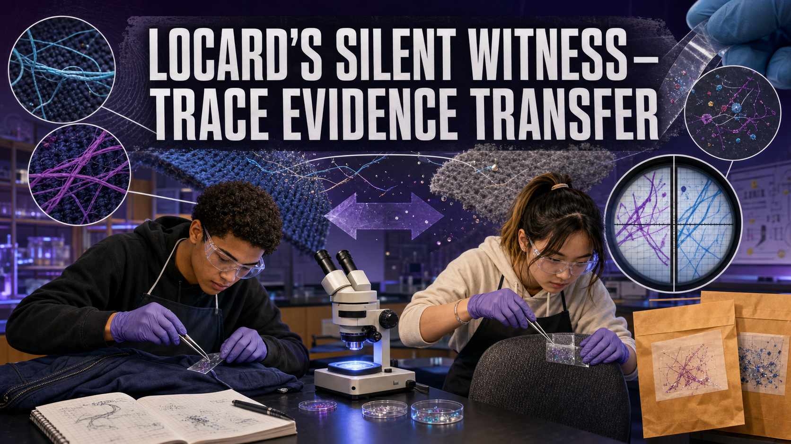
🧪 Physical · Ch 1, 2, 4
Prove every contact leaves a trace by documenting two-way fiber and glitter transfer between surfaces.
-
✅ Map the Scene — Triangulation
🧪 Physical · Ch 2
Produce a scaled crime-scene sketch by triangulation, then prove it by reconstruction.
-
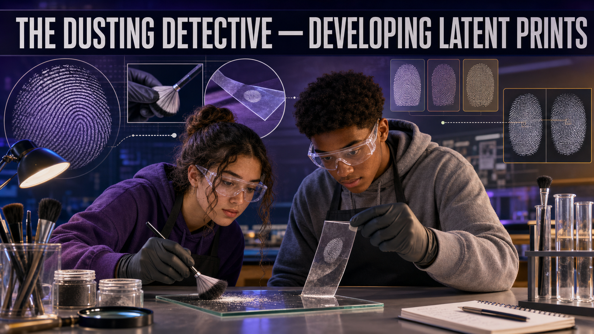
🧪 Physical · Ch 3
Develop latent fingerprints with powder and match them to a suspect exemplar.
-
Cold Case — AFIS Classification
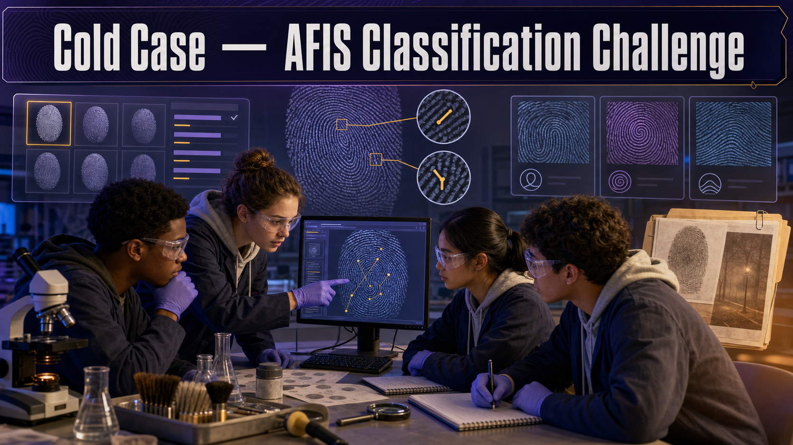
💻 Virtual · Ch 3
Classify a latent print and search a suspect database the way AFIS does.
-
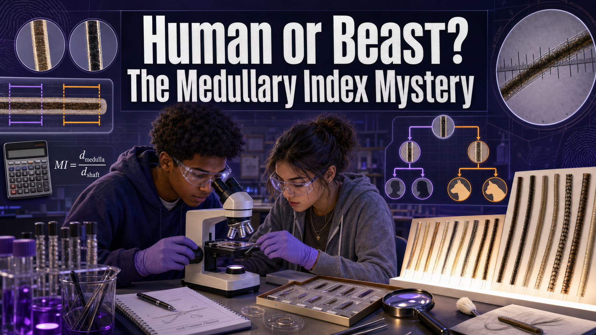
🔀 Combination · Ch 4
Measure hair under a microscope and compute the medullary index to sort human from animal.
-
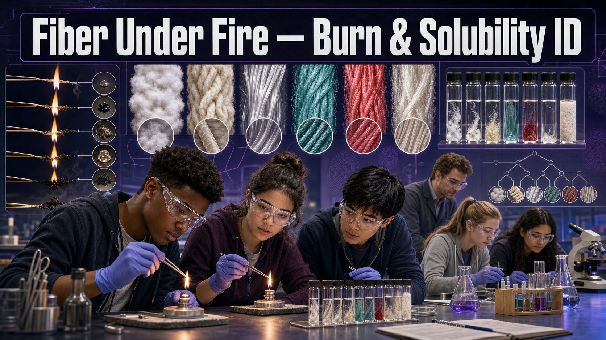
🧪 Physical · Ch 4
Identify unknown fibers by burn behavior and solubility using a dichotomous key.
-
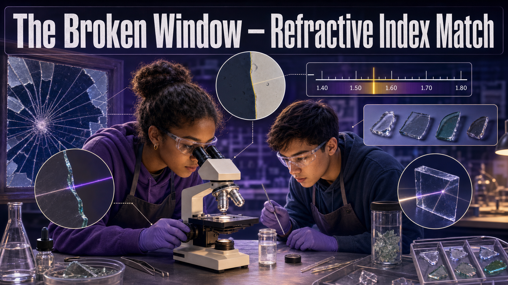
🔀 Combination · Ch 5
Use the Becke line to compare glass fragments to a source window.
-
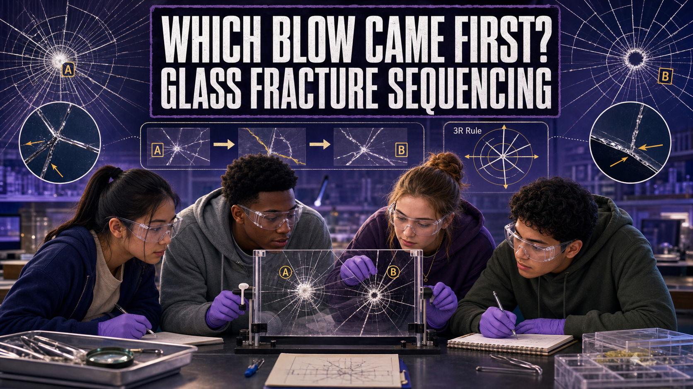
🔀 Combination · Ch 5
Sequence impacts on fractured glass using the 3R rule.
-
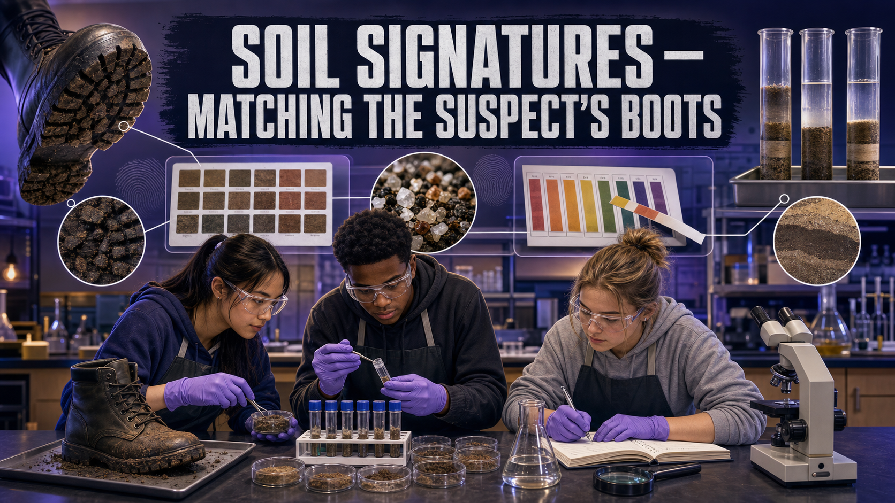
🧪 Physical · Ch 5
Match boot soil to a location by color, pH, and particle layering.
-
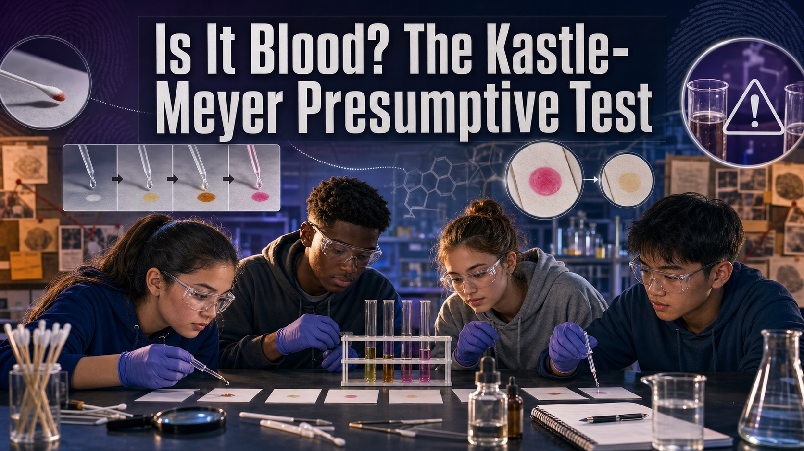
🧪 Physical · Ch 6
Run a presumptive blood test and reason about false positives.
-
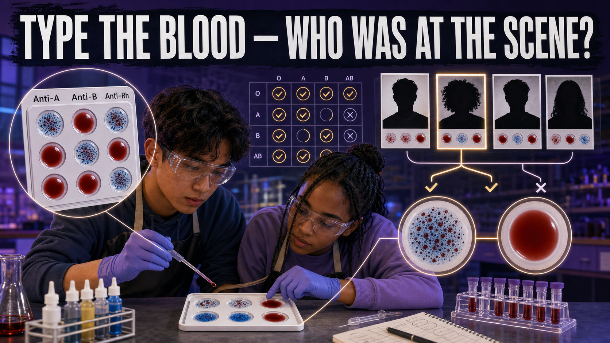
🧪 Physical · Ch 6
Determine ABO/Rh type from agglutination to include or exclude suspects.
-
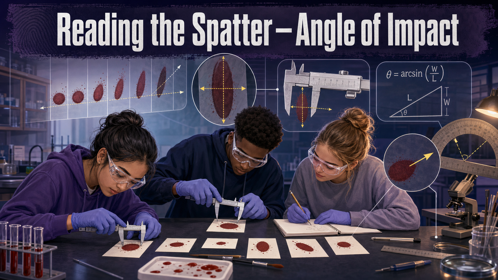
🔀 Combination · Ch 7
Measure stains and calculate the impact angle from width and length.
-
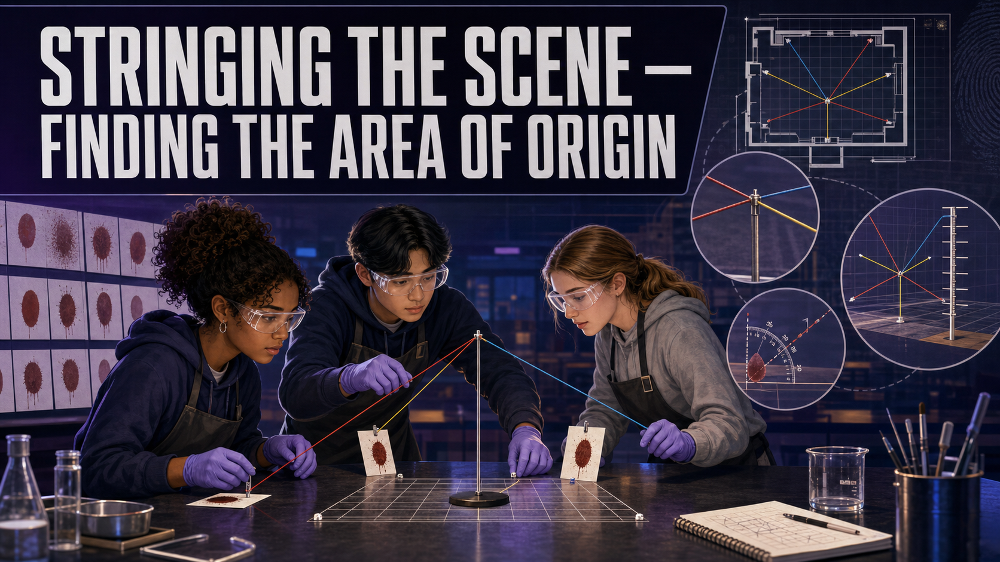
🔀 Combination · Ch 7
Reconstruct the 3D area of origin of a bloodstain pattern.
-
🔀 Combination · Ch 8
Extract real DNA, then match a simulated STR profile to a suspect.
-
💻 Virtual · Ch 8
Apply the product rule to compute a random match probability for a jury.
-

🔀 Combination · Ch 9
Screen safe unknown powders with color spot tests, then confirm by simulated GC-MS.
-
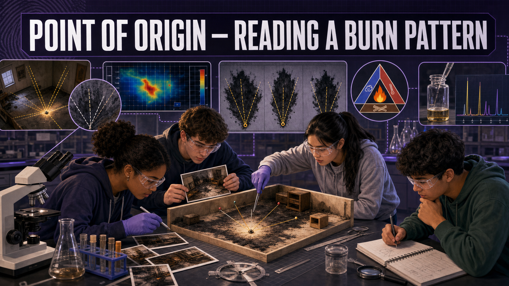
💻 Virtual · Ch 10
Read V-patterns and char to locate a fire's origin and spot arson.
-
🔀 Combination · Ch 11
Estimate biological sex and stature from skeletal measurements.
-
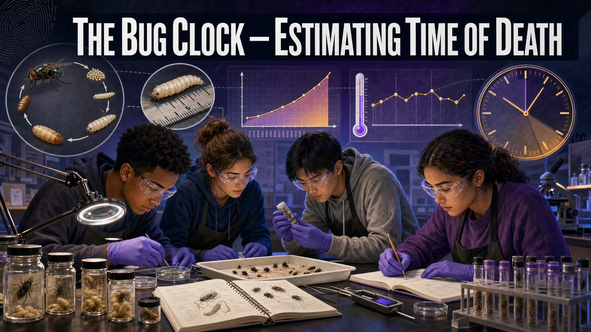
🔀 Combination · Ch 12
Estimate time of death from larval length and accumulated degree hours.
-

🧪 Physical · Ch 13
Match a pry mark to a tool by class and individual characteristics.
-

🧪 Physical · Ch 14
Separate ink pigments by chromatography to identify the pen used.
-
🔀 Combination · Ch 14
Compare questioned and known handwriting to judge authenticity.
-
🔀 Combination · Ch 15
Compute and compare cryptographic hashes to detect tampering of digital evidence.
-
💻 Virtual · Ch 15, 18
Use EXIF timestamps and GPS to break a suspect's alibi.
-
💻 Virtual · Ch 17
Triangulate a phone from cell-tower records and state the uncertainty.
-
💻 Virtual · Ch 18
Build a network graph and find the ringleader using centrality.
-
Reconstructing the Debris Field
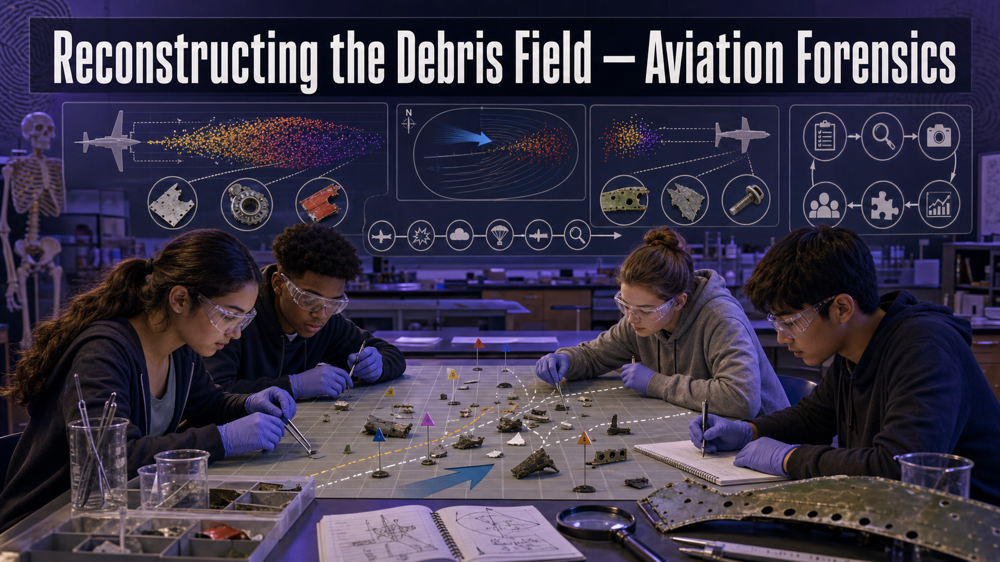
💻 Virtual · Ch 19
Classify a crash debris field and build a probable-cause hypothesis.
-
💻 Virtual · Ch 16
Trace a facial-recognition pipeline and evaluate its bias and admissibility.
Looking for supplies, safety notes, per-group costs, and MicroSim specifications? The complete lab-idea catalog documents all 28 investigations in detail, plus suggested rotations and semester-long capstones.